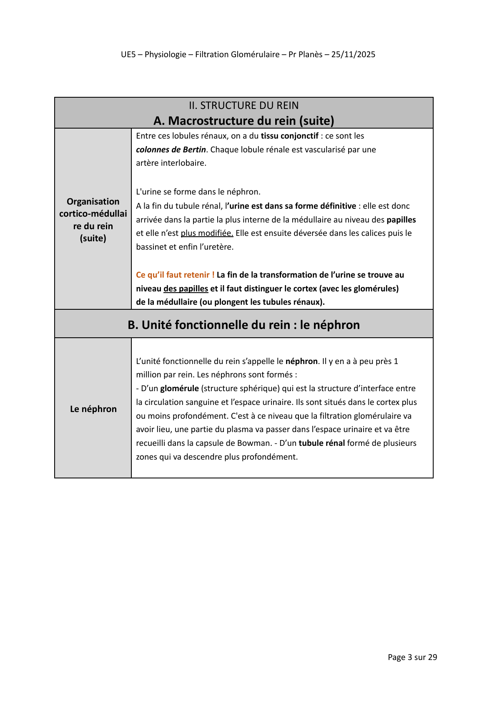
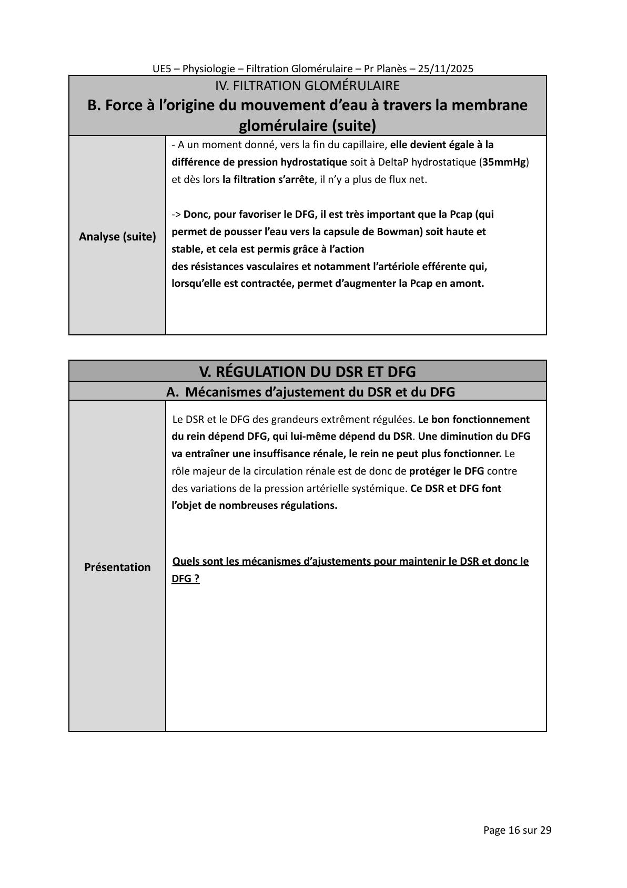
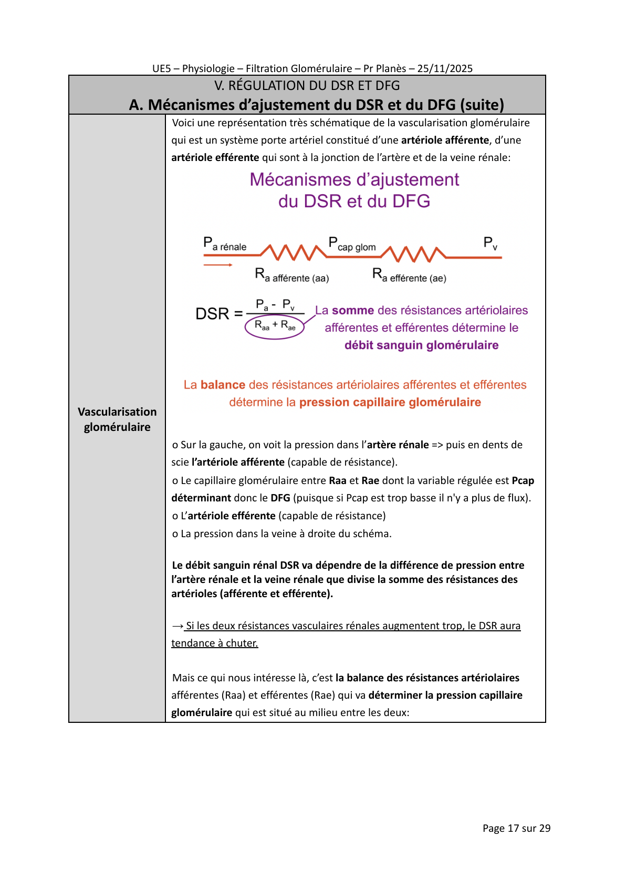
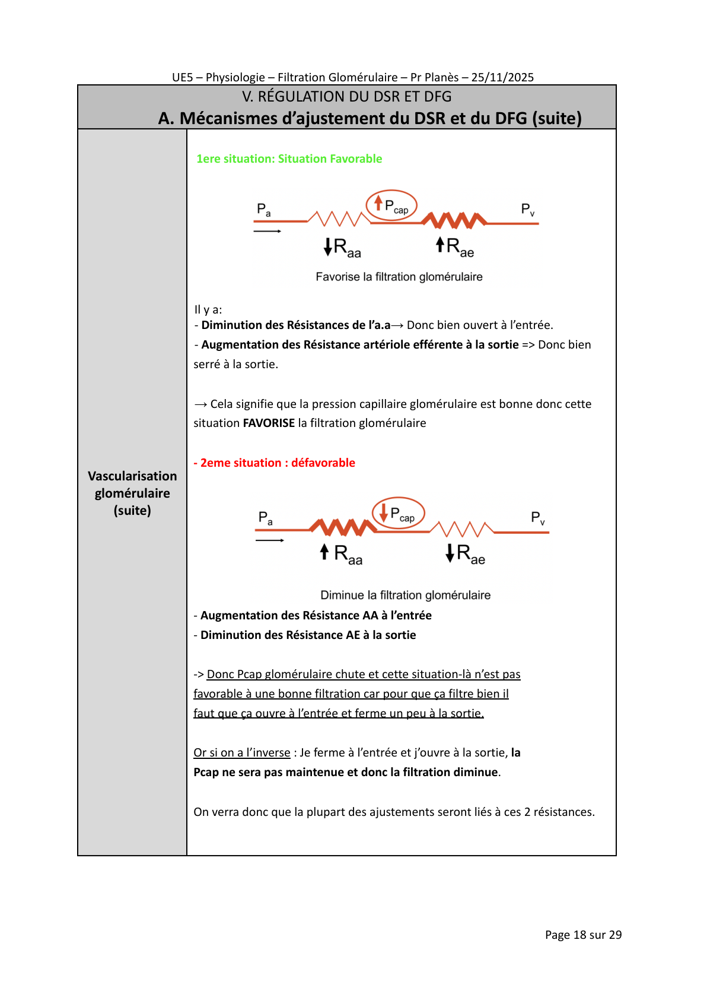
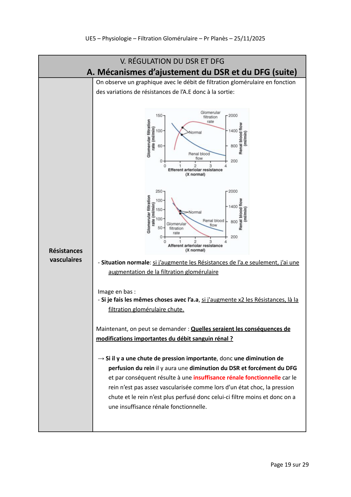
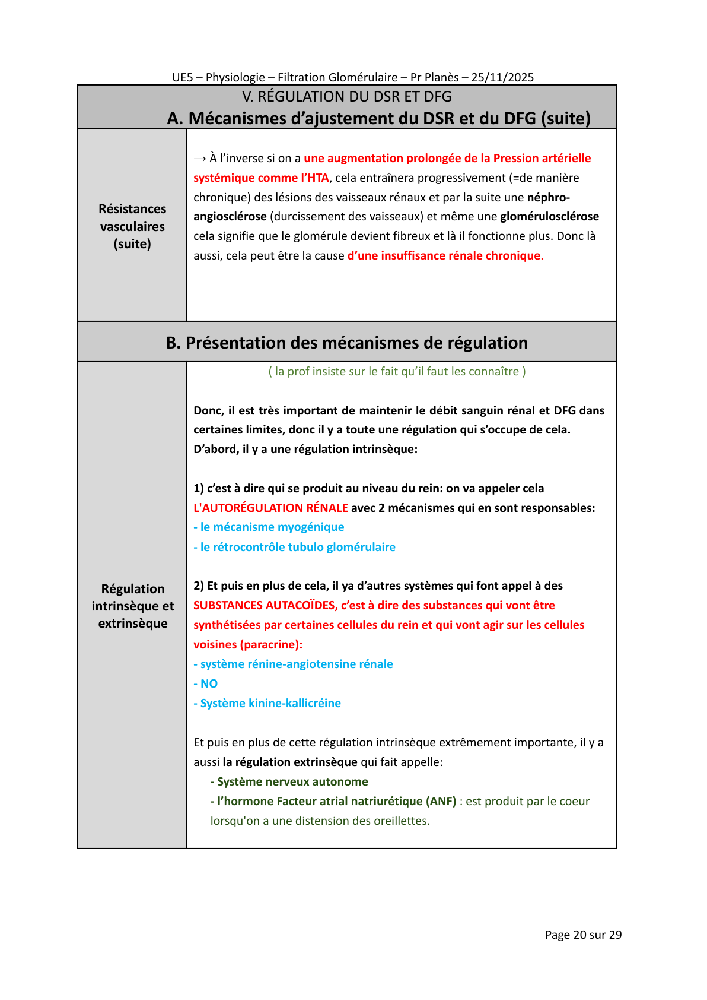
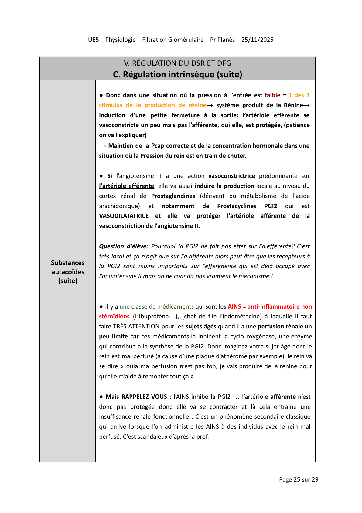
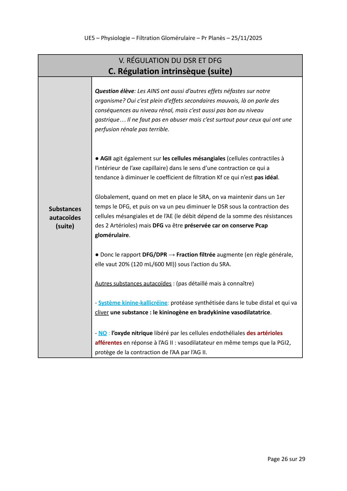

Filtration Glomérulaire
Fonctions · Structure · DSR/DPR · DFG · Régulation · Physiopathologie
🎯 Objectifs pédagogiques
- Décrire les principales fonctions du rein (épuration, homéostasie, endocrine)
- Connaître la structure du néphron : glomérule, tubules, appareil juxta-glomérulaire
- Définir et calculer le DSR, le DPR et la clairance rénale
- Expliquer le DFG et les forces de Starling appliquées au glomérule
- Décrire les mécanismes d’autorégulation (myogénique, TGF, SRAA, ANF)
- Analyser la physiopathologie de la sténose de l’artère rénale et ses implications cliniques
📋 Plan du cours
Fonctions du rein
Épuration · Homéostasie hydro-électrolytique · Fonctions endocrines
Fonctions du rein : vue d’ensemble
- Déchets azotés : urée, créatinine, acide urique
- Médicaments, toxines
- Na⁺, K⁺, H₂O, Ca²⁺, phosphates
- pH : réabsorption HCO₃⁻, excrétion H⁺
- EPO : érythropoïèse (hypoxie)
- Rénine : initie le SRAA
- 1α-hydroxylase : → calcitriol (vitamine D active)

🧠 Quiz flash : Fonctions du rein
Formation de l’urine et fonctions tubulaires
3 étapes séquentielles :
glomérule, 180 L/j
tubules, 99 %
tubulaire active
~1,5 L/j
| Segment | Fonction principale |
|---|---|
| Tubule proximal | Réabsorption 67 % Na⁺, glucose, AA, HCO₃⁻, H₂O |
| Anse de Henlé descendante | Réabsorption H₂O (perméable) |
| Anse de Henlé ascendante large | Réabsorption NaCl actif (NKCC2) → gradient médullaire |
| Tubule distal | Ca²⁺ (PTH), Na⁺ (aldostérone) |
| Tube collecteur | H₂O (ADH), Na⁺ (aldostérone), K⁺/H⁺ |

🧠 Quiz flash : Formation de l’urine
📝 Examen — Section I
🏥 Dossier Progressif — Section I
Structure du rein
Macrostructure · Néphron · Glomérule · Barrière de filtration · Appareil JG
Macrostructure et néphron
- 1 à 1,2 million par rein
- Corpuscule rénal + tubule rénal
- Néphrons corticaux (85 %) : anse courte
- Néphrons juxtamédullaires (15 %) : anse longue → concentration max

🧠 Quiz flash : Structure rénale
Glomérule, barrière de filtration et appareil JG
1. Endothélium fenêtré (pores 70–100 nm) — bloque les cellules
2. MBG (charge négative) — bloque les protéines anioniques (albumine)
3. Podocytes / diaphragme de fente (néphrine) — filtre par taille et charge
• Cellules JG (artériole afférente) : synthèse de rénine, barorécepteurs
• Macula densa (tubule distal) : détecte [NaCl] tubulaire → rétrocontrôle TG
• Cellules de Goormaghtigh : relais paracrine

🧠 Quiz flash : Glomérule et JGA
📝 Examen — Section II
🏥 Dossier Progressif — Section II
Débit Sanguin Rénal et Débit Plasmatique Rénal
Définitions · Clairance PAH · Valeurs normales · Autorégulation
DSR, DPR : définitions et formules
Valeur normale : 1 000–1 200 mL/min (20–25 % du DC).
DPR = DSR × (1 − Ht). Valeur normale : 600–700 mL/min (Ht = 0,45).
C = (U × V) / P — U : concentration urinaire, V : débit urinaire (mL/min), P : concentration plasmatique.
CPAH = UPAH × V / PPAH ≈ DPR effectif (~600–700 mL/min)
Le PAH est filtré + sécrété activement (~90 % d’extraction en un passage)

🧠 Quiz flash : DSR et DPR
Autorégulation du débit rénal
- ↑ PAM → étirement artériole afférente
- → contraction du ML artériolaire
- → vasoconstriction → ↓ DSR → maintien DFG
- Réponse rapide (secondes)
- ↑ DFG → ↑ [NaCl] à la macula densa
- → libération adénosine/ATP
- → vasoconstriction artériole afférente
- → ↓ DFG (rétrocontrôle négatif)

🧠 Quiz flash : Autorégulation
📝 Examen — Section III
🏥 Dossier Progressif — Section III
La filtration glomérulaire
DFG · Mesure (inuline, créatinine) · Forces de Starling · Kf · Fraction de filtration
DFG : définition, mesure et estimation clinique
- Créatinine endogène, taux constant (masse musculaire)
- Filtrée + légèrement sécrétée → Cl_créatinine surestime légèrement le DFG (~10 %)
- Formules : Cockcroft-Gault, MDRD, CKD-EPI
- CKD-EPI = référence actuelle (âge, sexe, créatinine ± cystatin C)

🧠 Quiz flash : DFG et mesure
Forces de Starling au glomérule
| Force | Valeur (mmHg) | Effet sur la filtration |
|---|---|---|
| Pgc : pression hydrostatique capillaire glomérulaire | 45 | ⬇ Favorise la filtration |
| Pt : pression hydrostatique espace de Bowman | 10 | ⬆ S’oppose à la filtration |
| πgc : pression oncotique plasmatique | 25 | ⬆ S’oppose à la filtration |
| πt : pression oncotique du filtrat | 0 | Négligeable (pas de protéines) |
PNF = (Pgc − Pt) − (πgc − πt)
= (45 − 10) − (25 − 0) = 35 − 25 = +10 mmHg

🧠 Quiz flash : Forces de Starling
📝 Examen — Section IV
🏥 Dossier Progressif — Section IV
Régulation du DSR et du DFG
Autorégulation · Mécanisme myogénique · TGF · SRAA · Autacoïdes · ANF
Régulation intrinsèque : mécanisme myogénique et rétrocontrôle TG
- ↑ PAM → étirement de l’artériole afférente
- → canaux mécanosensibles → entrée Ca²⁺
- → contraction muscle lisse → vasoconstriction
- → ↑ résistance → maintien Pgc
- Réponse : secondes
- ↑ DFG → ↑ [NaCl] macula densa
- → libération adénosine + ATP
- → vasoconstriction artériole afférente
- → ↓ DFG (rétrocontrôle négatif)
- Réponse : minutes

🧠 Quiz flash : Régulation intrinsèque
Régulation extrinsèque : SRAA, autacoïdes, sympathique et ANF
| Régulateur | Effet sur artériole afférente | Effet sur artériole efférente | Effet sur DFG |
|---|---|---|---|
| Ang II | Vasoconstriction (+) | Vasoconstriction (+++) | ↑ (maintien DFG si ↓ DSR) |
| PGE₂ / PGI₂ | Vasodilatation | Peu d’effet | Protègent DFG si SRAA activé |
| NO | Vasodilatation | Vasodilatation | ↑ DSR |
| Endothéline | Vasoconstriction | Vasoconstriction | ↓ DSR et DFG |
| Sympathique (NA) | Vasoconstriction (α₁) | Vasoconstriction (α₁) | ↓ DSR et DFG |
| ANF (ANP) | Vasodilatation | Vasoconstriction | ↑ DFG + ↑ natriurèse |

🧠 Quiz flash : Régulation extrinsèque
📝 Examen — Section V
🏥 Dossier Progressif — Section V
Physiopathologie
IRA prérénale · Sténose de l’artère rénale · HTA rénovasculaire
Sténose de l’artère rénale et HTA rénovasculaire
↓ pression aval
artériole afférente
cellules JG
efférente
Maintien DFG
- Rein sténosé : ↑ rénine → Ang II → maintien DFG local
- Ang II systémique → ↑ PA (HTA rénovasculaire)
- Rein controlatéral normal mais subit l’HTA
- Les deux reins dépendent de l’Ang II
- IEC/ARA-II → ↓ Ang II → ↓ DFG des deux reins
- Contre-indication absolue IEC/ARAII

🧠 Quiz flash : Sténose artère rénale
Conséquences des IEC sur le rein sténosé et prise en charge
- ↓ Ang II → ↓ vasoconstriction efférente
- → ↓ DFG rein sténosé (dépendant Ang II)
- → ↑ créatinine ipsilatérale
- Rein controlatéral normal → DFG global maintenu
- IEC utilisable sous surveillance créatinine
- ↓ Ang II → ↓ DFG des deux reins
- → IRA sévère, hyperkaliémie
- CONTRE-INDICATION ABSOLUE
- À évoquer si : ↑ créatinine > 30 % après instauration IEC ou ARA-II
- Revascularisation : angioplastie transluminale percutanée ± stent
- Indications : HTA réfractaire, IRA sur IEC, œdème pulmonaire flash (SAR bilatérale)
- Traitement médical si SAR unilatérale stable : IEC/ARAII (sous surveillance) + statines + antiagrégants

🧠 Quiz flash : IEC et sténose rénale
📝 Examen — Section VI
🏥 Dossier Progressif — Section VI
📊 Récapitulatif — Points clés
1 000–1 200 mL/min
20–25 % du DC
600–700 mL/min
DPR = DSR × (1−Ht)
120–130 mL/min
Kf × PNF = 12,5 × 10
+10 mmHg
(45−10) − (25−0)
PAM 80–180 mmHg
Myogénique + TGF
Vasoconstriction efférente
Maintien DFG si ↓ DSR
• Cl_inuline = DFG exact · Cl_PAH ≈ DPR effectif
• Fraction de filtration = DFG/DPR ≈ 20 %
• AINS + SRAA activé = risque IRA · IEC + SAR bilatérale = CI absolue
• U/P urée > 10 = IRA prérénale (tubules intacts)
Félicitations !
Vous avez complété le cours de Filtration Glomérulaire